ERP setup (Odoo) → SQL Data Extraction (PostgreSQL) → Power BI Dashboard
This demo project showcases how I set up a sample ERP system (Odoo), generated sales and purchase transactions, extracted data from the backend PostgreSQL database using SQL, and then visualized business KPIs in Power BI. The project highlights end-to-end ERP data integration, transformation, and analytics.
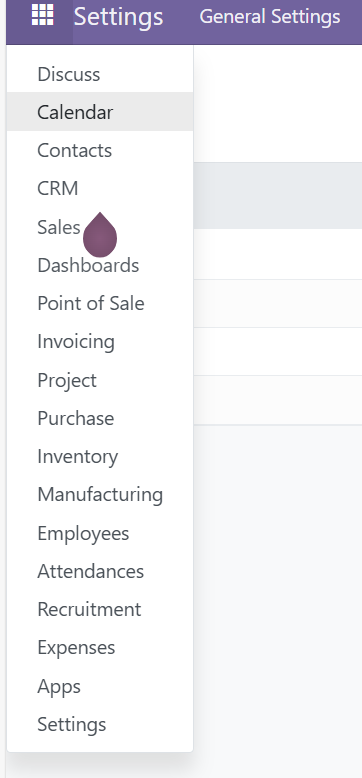
1. Odoo ERP dashboard after installation and module configuration.
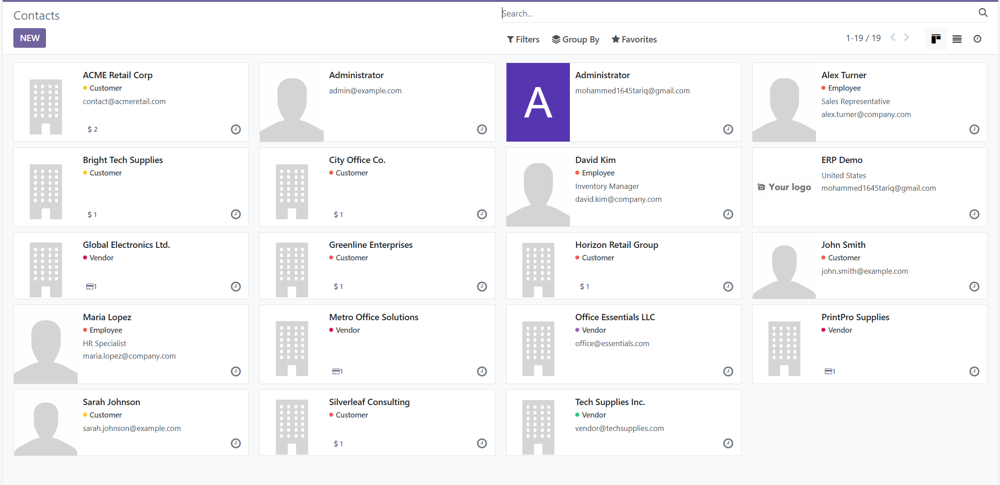
2. Created sample customers and vendors in ERP to simulate business transactions.
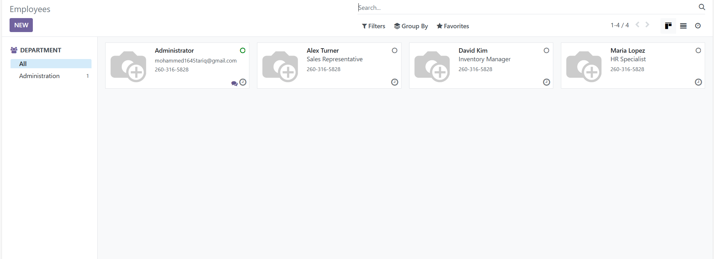
3. Configured demo products with categories for sales and purchases.
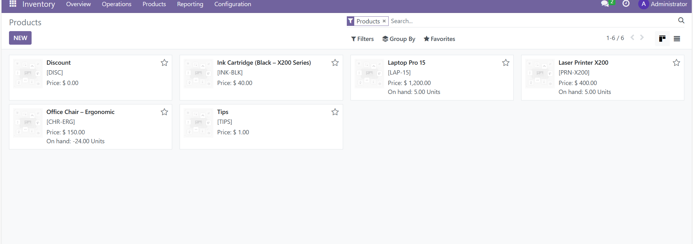
4. Captured a new sales order for Customer A with multiple products.
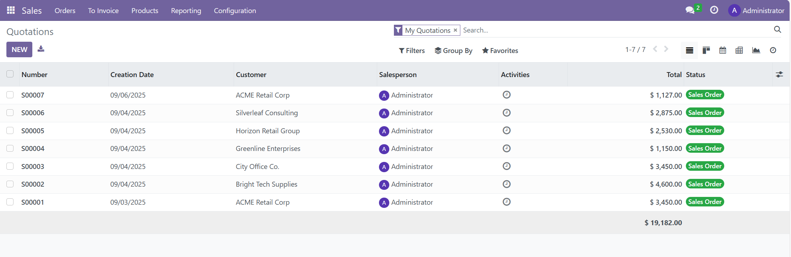
5. Logged vendor purchases to simulate supply chain activity.
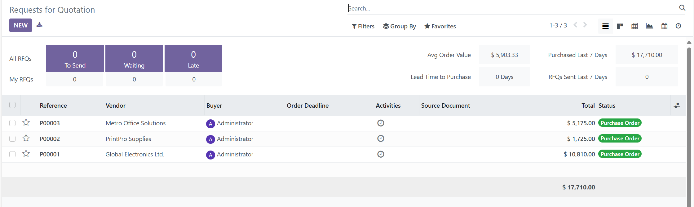
6. Defined employees and roles for access/security demo.
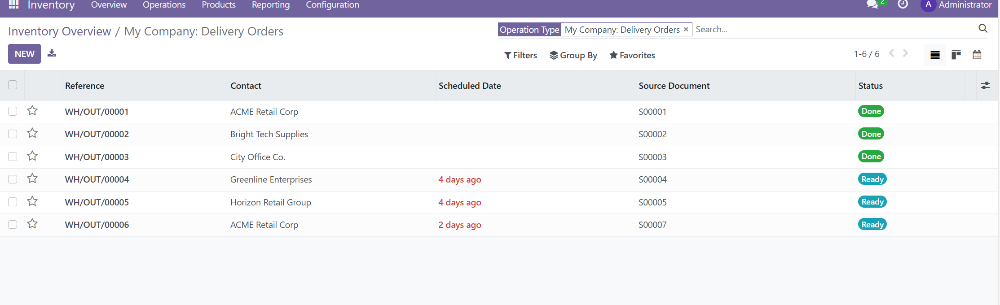
7. Tracked order processing through ERP workflow states.
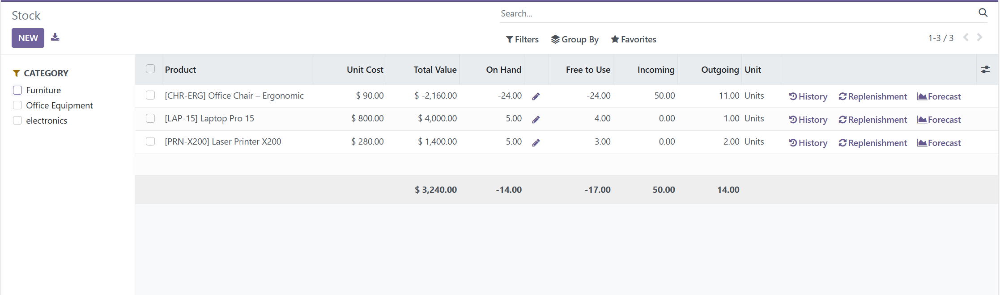
8. Generated invoices for recorded sales transactions.
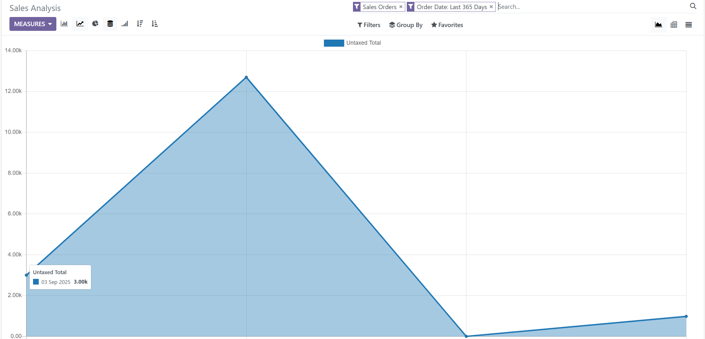
9. Ran ERP reports to validate order and purchase summaries.
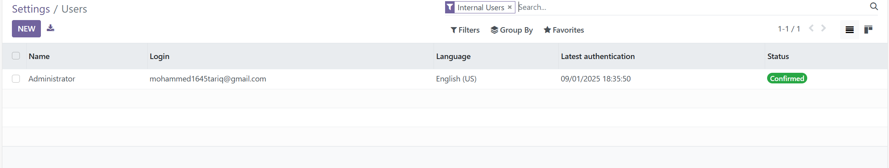
10. Used additional ERP module functionality (custom module/configuration demo).
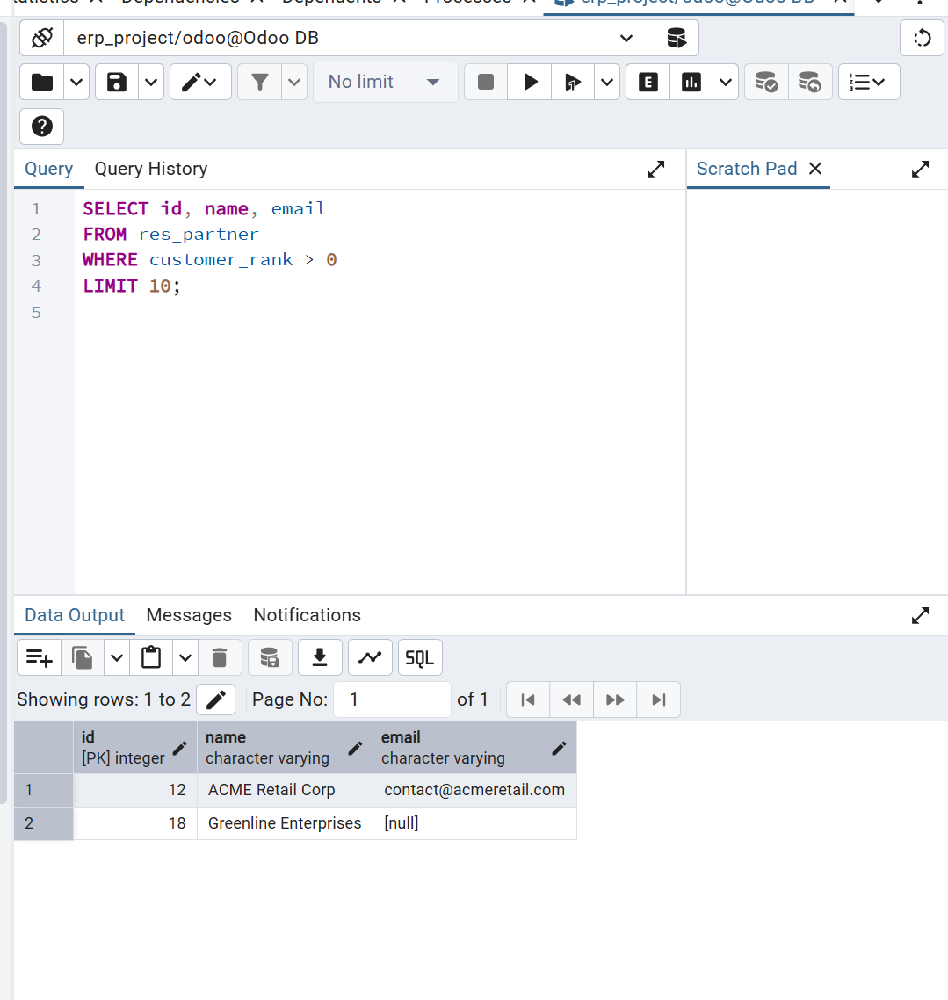
11. Extracted raw transaction data from PostgreSQL using SQL queries.
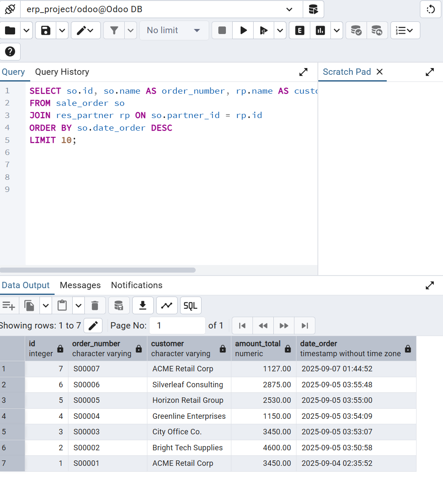
12. Cleaned and joined sales and purchase tables for analysis.
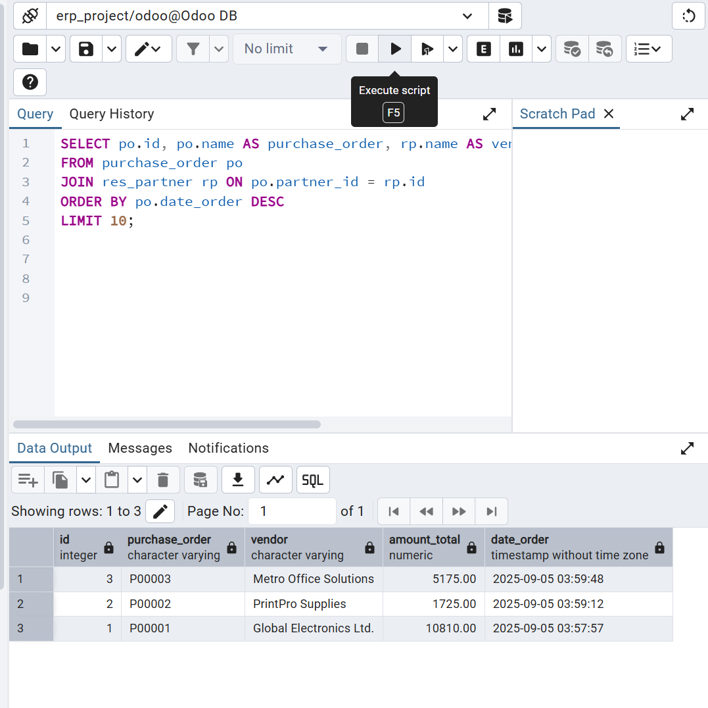
13. Verified clean and structured output ready for Power BI import.
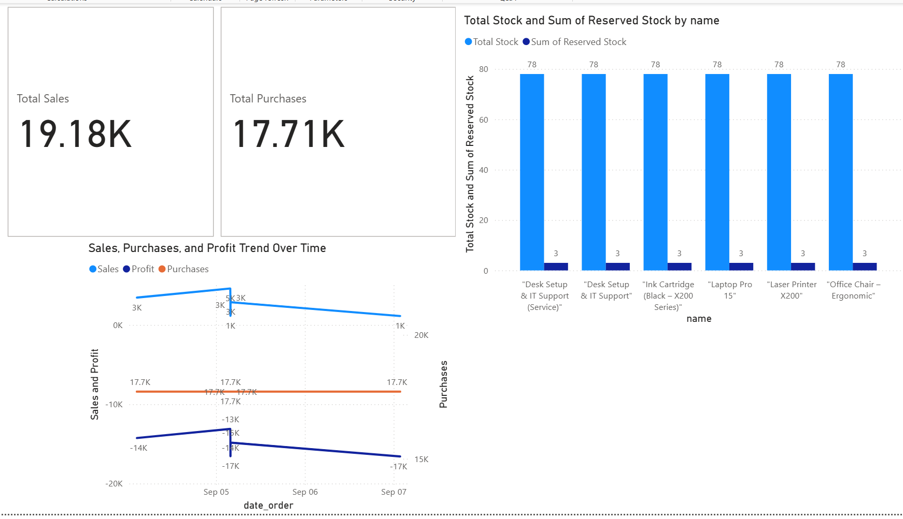
14. Final Power BI dashboard showing total sales, purchases, stock, and profit trends.